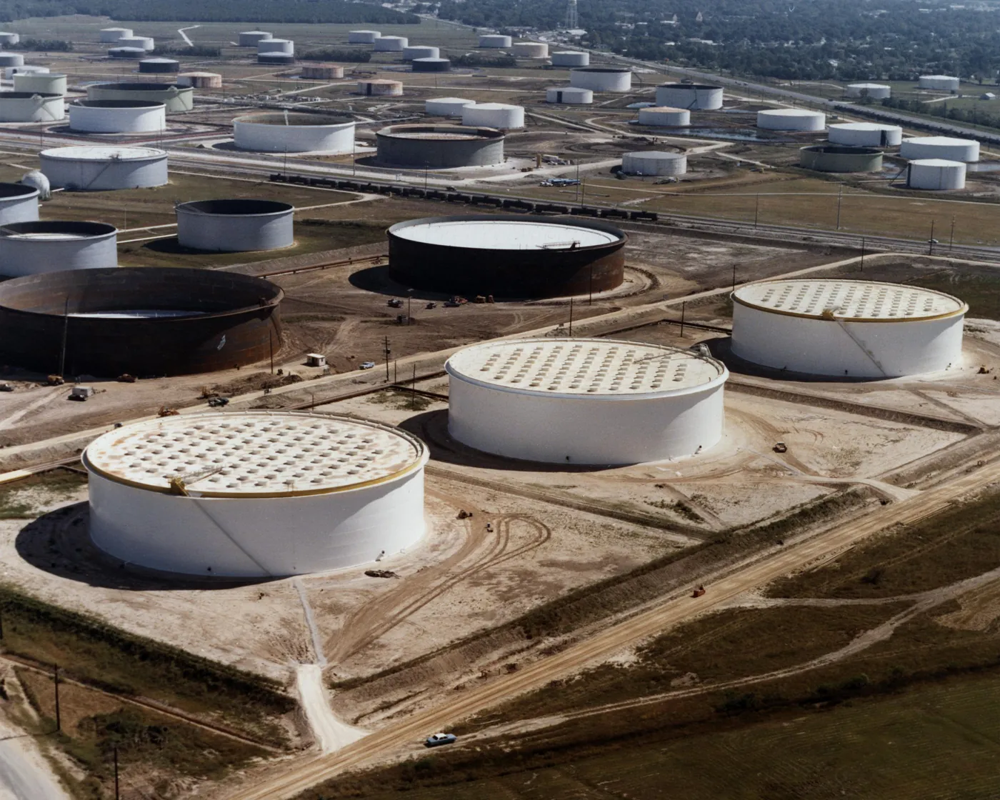

Vapor flow over 24 hours
Dry vapor · Nm³/h
Sequential filling
Collected
Uncollected
VRU limit
08:00–09:00
| Hour | Generated | Collected | Bypass | Overflow |
|---|
KMG ENGINEERING · CASE 02
Collect methane-rich vapors, compress and cool them, then fuel an existing on-site gas engine to displace purchased electricity.

TANK FARM · 24-HOUR MODEL
Switch the filling schedule to see what happens when vapors reach the collection header faster than the VRU can take them.
Assumed share after tank sealing. The rest bypasses collection.
Dry vapor · Nm³/h
Sequential filling
| Hour | Generated | Collected | Bypass | Overflow |
|---|
Both schedules release 320 Nm³ during filling. Sequential filling releases 80 Nm³/h over four hours. Simultaneous filling releases 160 Nm³/h over two hours. The remaining daily vapor volume is distributed across the other hours. We assume 85 mol.% methane on a dry basis and equal daily emissions in both cases.
Hourly collection = min(vapor generated × header access, VRU capacity). There is no vapor buffer. The model assumes a full day of VRU operation and applies availability and fuel acceptance separately for the annual projection. Normal volumes use 0 °C and 101.325 kPa abs.
ASPEN HYSYS V12 · PROCESS MODELS
Compare the equipment loads and methane routed to product for each operating case.
Loading Aspen results…
Methane to product is a share of CH₄ already at the VRU inlet. Site-wide collection is modeled above. Cooling duty is thermal. Shaft power sums the modeled machines for each technology.
EXISTING ON-SITE GAS ENGINE
Compare payback with and without methane credits. The team assumes an existing gas engine with spare capacity.
The deck assumes 1,090 MWh/year of grid power displaced at 36.49 KZT/kWh. The credit basis is a separate target scenario. Credit eligibility and net verified reductions require confirmation.
Loading data…
TEAM SUNKAR · PROJECT FILES